© 2003 Splash Damage, Ltd. All Rights Reserved.

| Wolfenstein: Enemy Territory Documentation © 2003 Splash Damage, Ltd. All Rights Reserved. |
|
The command map can be 256 pixels square up to 1024 in size, the game will resize the image regardless. The command map picture (stored as a .tga) has to be created externally by a paint program of your choice. The grid size and co-ordinates are worked out from the min/max keys in the worldspawn entity for the map.
Key
mapcoordsmins
represent the top left corner (x / y map editor values).
Key
mapcoordsmaxs
represent the bottom right corner (x / y map editor values).
One of the easiest ways to do that is to create a square brush under your map. (Make sure it's square!) Also make sure that everything that has to be on the command map is within the bounds of the square brush. Then move the cursor over the top left corner of the brush and you will get the x / y mapcoordsmins (first two values) from the little coordinate line in Radiant (bottom right). Repeat for the x / y mapcoordsmaxs with the bottom right corner of the brush and you're done.
A quick way to create a temporary command map is to use the tracemap command and take the RED channel image and re-scale it to a 512x512 image. Here is an example of the final command map image and the RED channel image for the map 'Goldrush'. (As a temporary image for the command map the red channel has basic similarities)
| 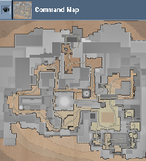 | 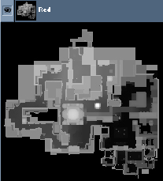 |
Adding the command map to the game
For this example of how to add a command post to the game I will assume your
new map is called 'mytest
'. So that your map does not conflict with others maps all the files for the
command should be named after your map name.
First create a square .tga image and save it as 'mytest_cc.tga' in the
'levelshots'directory. (512x512 pixels should be enough.)
Create a new shader called 'mytest_levelshots.shader' in the 'scripts'
directory.
Open the new shader file and create two new entries as follows:
|
levelshots/mytest_cc_automap { nopicmip nocompress nomipmaps { clampmap levelshots/mytest_cc.tga depthFunc equal rgbGen identity } } |
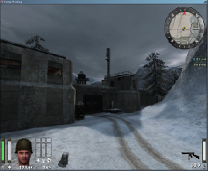 |
|
levelshots/mytest_cc_trans { nopicmip nocompress nomipmaps { clampmap levelshots/mytest_cc.tga blendfunc blend rgbGen identity alphaGen vertex } } |
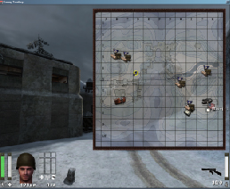 |
The 'automap' shader is used inside of the compass on the HUD and the 'trans' shader is used for the pop-out version of the command map. The command map displayed on the Limbo menu does not require any shader features.
Icons on the command map
At first glance the command map can look confusing but all of the relevant
information is displayed in small icons which if necessary can be filtered out.
The filter controls on the limbo menu also apply to the 'pop out' in game
command menu.
| 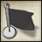 | Spawns The spawnflag icons will appear on the map where the team_WOLF_objective entities are located. The text displayed on the command map for the spawn point is from the entity key description.
|
||||||
| 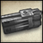 | Destructible If the Allied/Axis team have an objective which involves deconstructing something then a dynamite icon will appear on the map where the relevant trigger_objective_info entity is. Once the objective has been destroyed then the icon will disappear from the command map.
|
||||||
| 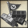 | Constructible If the Allied/Axis team have an objective which involves constructing something then a collection of crates icon will appear on the map where the relevant trigger_objective_info entity is. Once the objective has been built then the icon will disappear from the command map.
|
||||||
| 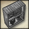 | Command Posts Initially the command post will appear as a construction objective and then turn into a command post icon. In order for the game to know it is dealing with a command post object the trigger_objective_info entity needs to have the is_commandpost spawnflag set.
|
||||||
| 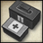 | Health and Ammo Cabinets The health/ammo cabinets will always appear on the command map unless they are linked to another construction. (Eg. the tank bay in Fueldump has the health/ammo cabinet linked to the command post) In order for the game to know it is dealing with a health/ammo cabinet the trigger_objective_info entity needs to have the is_healthammocabinet spawnflag set.
|
||||||
| 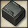 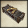 |
Custom Icons All custom icons are stored in the 'gfx/limbo' directory and prefixed with 'cm_'. The custom icon will replace both construct/destruction states for the object. Normally the system will use crates for construct and dynamite for destruction. Because of this limitation the custom icons where mainly used for flag objects like god bars and radar parts or func_explosive entities like the wall in the old city for 'Oasis'. The following keys are used on the trigger_objective_info entity to specify new custom icons for the command map:
|